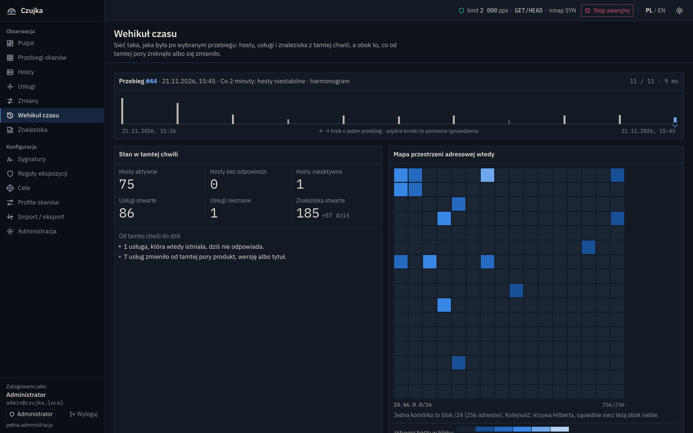
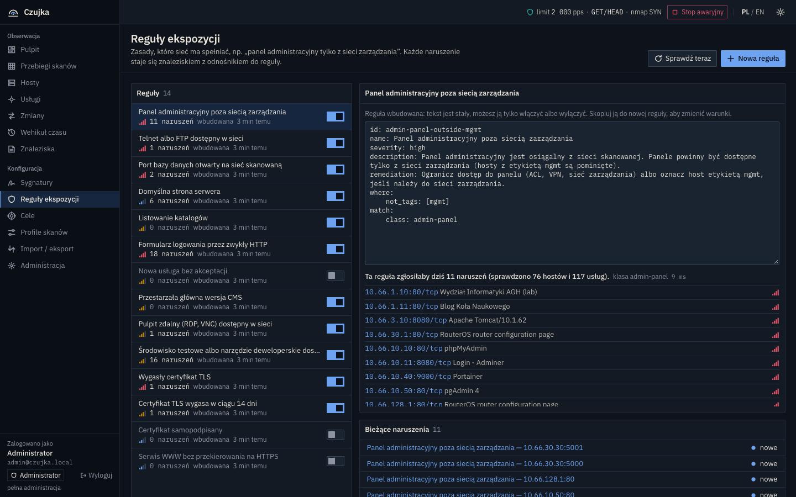
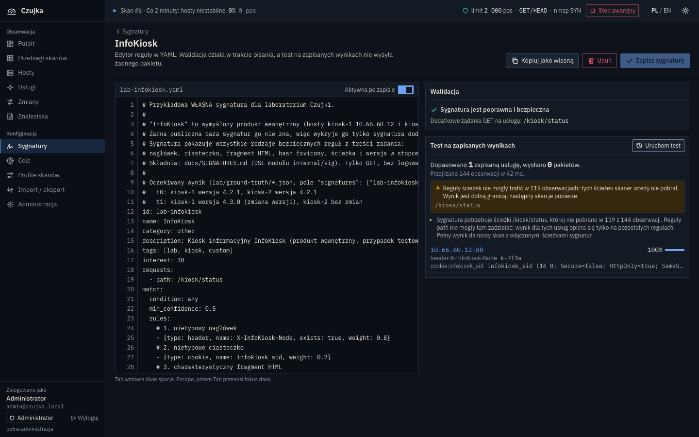
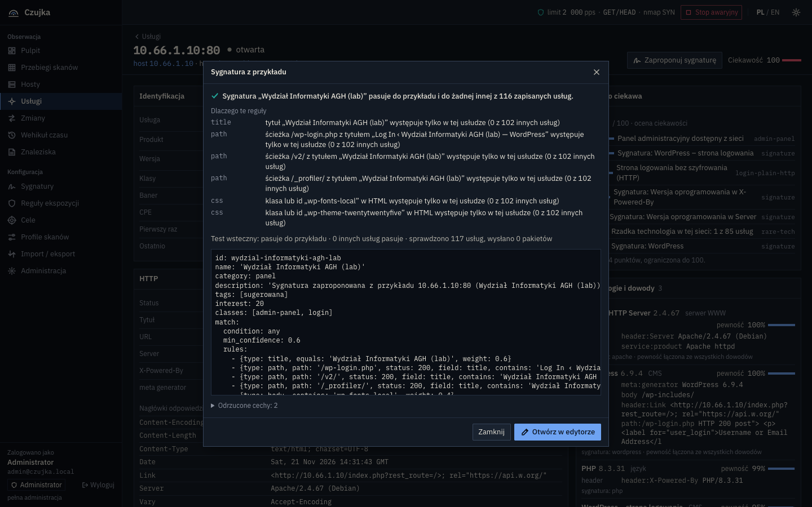
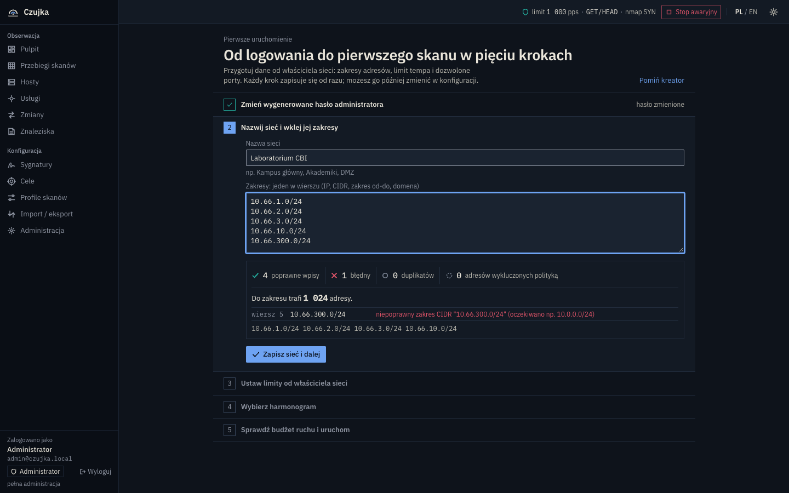

Adres milczy o 3 w nocy. Wyłączony na noc czy zniknął?
„dany adres w zależności od pory dnia może odpowiadać lub nie (w jaki sposób raportować zmianę? Jak określić pewność wyniku identyfikacji technologii? Po jakim czasie braku odpowiedzi w sukcesywnych skanach raportować host jako nieaktywny?)”
treść zadania CBI AGH, rozdz. 1
Czujka to skaner, który rozumie czas.
Każdy host ma własny rytm tygodnia: 168 godzin, model Bayesa. Brak odpowiedzi Czujka ocenia względem tego rytmu.
Schemat rytmu stacji roboczej z testu TestStabilityScenarios (docs/ALGORYTMY.md §2.6)
16 braków przez weekend
Zgodne z rytmem, więc bez alarmu.
p_alive 0,78 → 0,70
2 braki w poniedziałek w godzinach pracy
Host zgłoszony jako nieaktywny.
p_alive 0,21 → 0,03
Serwer, który zawsze odpowiadał: zgłoszony po 2 brakach. Host losowy: po medianie 5.
Cała sieć /16 w jednym przebiegu. Tempo ustala właściciel sieci.

Wie, co działa pod adresem, i mówi, dlaczego warto tam zajrzeć.
Pewność technologii łączy wszystkie dowody (noisy-OR). Ocena 0–100 zawsze stoi obok swoich powodów.

WordPress 6.9.4 w laboratorium: ocena 100, siedem powodów
Co się zmieniło, co tylko śpi, a co naprawdę zniknęło.
Drugi przebieg: 8 zmian
- Nowy host 10.91.0.11 z nginx
- nginx 1.24.0 → 1.30.7
- Tytuł strony: „Czujka lab” → „Czujka lab v2”
- Redis milczy w porze, w której zwykle odpowiada. Jeszcze nie „zniknął”.
- i 4 dalsze: nagłówki, treść, wersja usługi
test e2e/full na prawdziwych usługach
Sprawdza ponownie tylko to, co milczy
Czujka sprawdza tylko ten adres, najwyżej 200 adresów na godzinę, tylko w oknie skanu. Host z rytmem: o godzinie, w której model spodziewa się odpowiedzi.
Wehikuł czasu

Sieć taka, jaka była w dowolnym przebiegu, i różnica do dziś.
Reguła mówi, czego w sieci być nie może. Sygnatura powstaje z jednego przykładu.
Reguła ekspozycji
id: no-admin-panel-outside-mgmt severity: high where: not_cidr: [10.66.10.0/24] match: class: admin-panel expect: absent
Sprawdzana po każdym skanie i imporcie, bez pakietów. 14 reguł startowych. W laboratorium jedna z nich zgłasza 11 paneli poza siecią zarządzania.

Sygnatura z przykładu
Usługa → rzadkie i stałe cechy → walidator trybu bezpiecznego → retro-hunt po zapisanej historii.


Analityk poprawia. Następny skan tego nie nadpisze.
- Notatka, tagi i akceptacja ryzyka przetrwały drugi skan. Obok zostaje wartość skanera.
- Eksport przebiegu i ponowny import: JSON, CSV i nmap XML. Za każdym razem 10 hostów, 9 usług, 0 błędów.
- Ponowny import znalezisk: 180 zaktualizowanych, 0 duplikatów.
- DefectDojo: Generic Findings Import i nmap XML, sprawdzone na DefectDojo 3.5.202.
Bezpieczny z konstrukcji: dla sieci i dla danych.
- Tylko GET i HEAD; Czujka nie loguje się, nie wysyła ładunków ani skryptów NSE.
- Walidator odrzuca sygnaturę z POST, treścią żądania albo hasłem.
- Limit polityki zawsze wygrywa z profilem: pakiety, HTTP, jeden host.
- Okno czasowe się zamyka: skan staje i wraca w następnym oknie.
- pg_tde: tabele i WAL zaszyfrowane na dysku.
- AES-256-GCM dla kluczy API, ciasteczek i notatek. Rotacja klucza.
- Rola „Odczyt” nie widzi przycisków zapisu; serwer i tak odpowiada 403.
- Każdy eksport i każda zmiana trafia do dziennika audytu.
W poniedziałek rano: jedno polecenie.
# Docker z Compose, nic więcej
git clone <repozytorium> czujka
cd czujka
docker compose -f deploy/docker-compose.yml \
up -d --build --wait

| Czujka | SecureCodeBox | |
|---|---|---|
| Wymaga | Docker z Compose | Kubernetes (4 ostatnie wydania, v1.34–v1.37) i Helm |
| Składniki | 2 kontenery: binarka Go i PostgreSQL | operator, magazyn S3, osobny chart Helm na każdy skaner |
| Wyniki | baza z pg_tde, konsola WWW po polsku | pliki w S3, bez własnego interfejsu |
| Zasoby | obraz 107 MB; czujka.dev gotowa w 46 s na 4 vCPU | klaster Kubernetes |
SecureCodeBox orkiestruje wiele skanerów (ZAP, nikto, trivy). Czujka robi tylko discovery i pamięta jego historię.
securecodebox.io/docs/getting-started/installation, stan 21.11.2026
Zmierzone w laboratorium. Gotowe na wdrożenie w CBI.
kontroli e2e przez REST API, prawdziwe skany
czujka.dev: od zera do działającego stosu
od logowania do pierwszego skanu
najwięcej RAM w czasie skanów
Działa publicznie: https://czujka.dev, konto do odczytu dla jury (dane logowania w zgłoszeniu).
Po hackathonie
- Tydzień 1: instalacja w CBI na jednej podsieci, limity i okna od właściciela sieci.
- Dwa tygodnie nauki rytmu. Potem alarm tylko za prawdziwe zniknięcie.
- Do zrobienia: zakresy IPv6 (dziś pojedyncze adresy), drugi składnik logowania, klucze w zewnętrznym sejfie.
- Go, testy w każdym pakiecie, dokumentacja po polsku: do utrzymania przez zespół CBI.